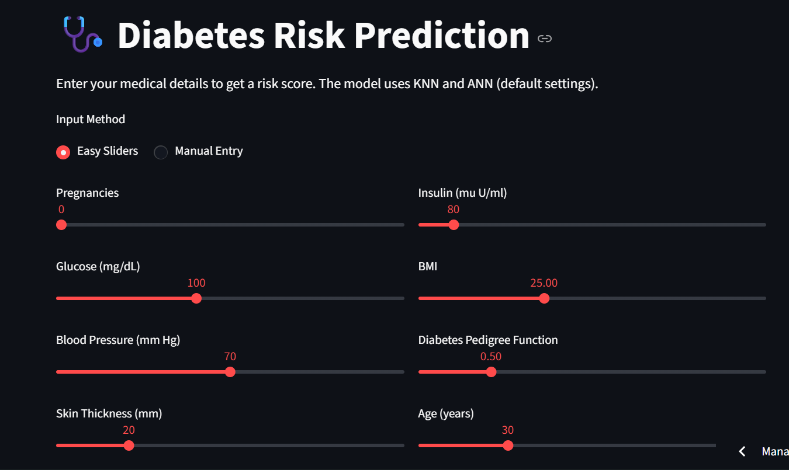
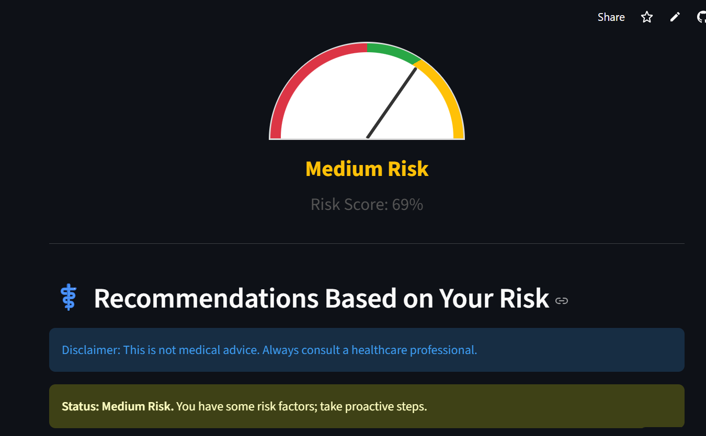

An intelligent Machine Learning and Streamlit-powered healthcare application designed to predict the likelihood of diabetes based on patient health indicators. The system provides instant predictions, risk assessment, and data-driven insights to support early diagnosis and healthcare decision-making.
This project leverages machine learning algorithms to analyze medical data and predict whether a patient is at risk of getting diabetes. The model was trained using healthcare-related features such as glucose levels, BMI, blood pressure, insulin levels, age, pregnancies, and skin thickness. The application is deployed using Streamlit, allowing healthcare practitioners, researchers, and users to interact with the model through an intuitive web interface.


The Diabetes Prediction System demonstrates how machine learning can be applied in healthcare to support early disease detection. By identifying high-risk individuals earlier, healthcare providers can take preventive measures, improve patient outcomes, and reduce long-term treatment costs. This project showcases practical skills in machine learning, predictive analytics, data preprocessing, model deployment, and application development using Streamlit.